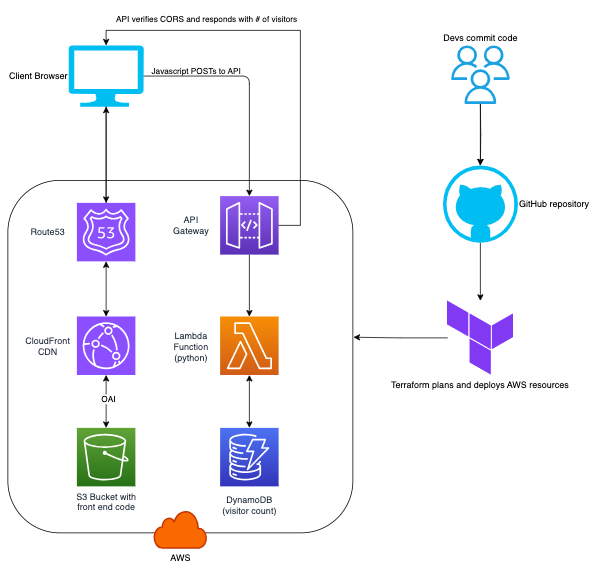

About Me
Hi there, I'm Lee. I am a software and IT expert with enterprise experience in most areas of the SDLC and operations. I have worked a variety of technical roles in the US and Canada. Eight years ago I was fortunate to find my niche in biotech, working remotely from British Columbia. My family lives in the coastal city of Campbell River on Northeastern Vancouver Island and we love our community. When I'm not working or playing with my kids I can usually be found tinkering on home improvements or spending time in the Ocean.
I am an enthusiastic learner and communicator, capable of diving deep into technical topics while translating low level nuance to high level audiences. I enjoy mentoring others and creating tools to improve efficiency, but above all, I love solving problems. Whether managing infrastructure, deploying changes, supporting a key account, troubleshooting a server or developing something new - I appreciate challenging problems and take an academic interest in researching solutions.
Facts
Years tech experience
+ Hours troubleshooting
Years fully remote
Team Player
Skills
Resume
Professional Experience
Senior Technical Application Scientist
Jan 2018 - Present (6+ yr)
Illumina Inc, San Diego, California
Illumina's lab instruments output massive amounts of genetic data requiring subsequent bioinformatic analysis and interpretation. We offer a variety of solutions to meet our customer's bioinformatics needs including SaaS and on-prem solutions, proprietary hardware and rack servers. I specialize in the implementation and troubleshooting of Illumina's bioinformatics solutions and their surrounding infrastructure.
- Escalation point for customer issues in software, networking, hardware, security, systems administration, cloud engineering and storage
- Hardware, kernel and application level troubleshooting of issues on Linux and Windows systems
- Advocacy between operations and support teams for high availability and fast incident response
- Triage of product defects with development teams
- Development and administration of internal tools, compute resources, storage systems
Skills: Troubleshooting · Red Hat Enterprise Linux · Network-Attached Storage (NAS) · Networking · Information Security · Cloud Engineering · Account Management · Kubernetes · Docker Products · Bioinformatics · Bash
Technical Application Scientist
Oct 2016 - Jan 2018 (1 yr 4 mos)
Illumina Inc, San Diego, California
IIllumina initially hired me to support customer implementations of a Laboratory Information Management Software (LIMS) solution for genomics labs. The LIMS is a 3-tier application offered to customers as a SaaS or on-premise solution which can also be integrated with lab instruments
- Technical project management of client implementations
- Pre and post-sales technical consulting for new LIMS customers
- Assisting customers to architect infrastructure for their unique LIMS use cases
- Leading implementations in the phases of planning, provisioning, integration, testing, support
- Provisioning and administering AWS SaaS resources, mostly in EC2, EBS, S3, Route53, VPC, IAM
- Providing support for technical issues including after hours or on-call incident response
Skills: Red Hat Enterprise Linux · Amazon Web Services (AWS) · Networking · Account Management · Project Management · Oracle Database · SQL · System Architecture · Apache · Ansible
Technical Project Manager
Apr 2015 - Oct 2016 (1 yr 7 mos)
iQmetrix USA, Davidson, North Carolina
- Relocated from Canadian to US headquarters in Davidson, North Carolina
- Managing the end-to-end project lifecycle of custom solutions for iQmetrix's largest client
- Identifying client requirements and managing the delivery of solutions from design to release phases
- Coordinating remote technical teams: development, database, operations, QA, support
- Joint application design and systems architecture for partner integrations
- Authoring project plans, statements of work, design documents and release plans
- Frequent travel to clients to lead monthly production deployments and feature design sessions
Skills: Technical Project Leadership · Release Management · System Architecture · Account Management · Joint Application Design (JAD)
Quality Assurance Analyst
May 2013 - Apr 2015 (2 yr)
iQmetrix Canada, Regina, SK
- Primary QA contact and defect manager for iQmetrix largest enterprise client
- Regular travel to client HQ in Atlanta for production deployments, validation and triage
- Configuration and management of 20+ pre-production testing environments
- Source control, build management and feature/bug tracking
- Testing using automation, performance, white-box, black-box and regression techniques
- Analyzing product requirements and creating test plans to validate them
Skills:Microsoft TFS · Jira · Postman · REST APIs · Account Management · Agile Testing · SQL
Systems Engineer - Computational Physics
Jan 2012 - May 2013 (1 yr 5 mos)
Saskatchewan Cancer Agency, Regina, SK
- Contributing to computational systems for radiotherapy simulation
- Building a 16-node Linux compute cluster with job scheduler to run radiotherapy simulations
- Contributing to the development of Monte Carlo radiotherapy simulation software
- Calibration, quality assurance, and documentation of systems
- Acting as a key member of the research team
Skills: Linux · High Performance Computing (HPC) · Bash · C++ · LaTeX · Network Administration · Physics
NSERC Research Assistant
May 2010 - Jan 2012 (1 yr 9 mos)
University of Regina, Regina, SK
- Assisting in the design of a Cherenkov particle detector for Jefferson Laboratory, Virginia
- CAD design and drafting of custom manufactured components
- Software development for simulation and optimization of particle detector performance
Computer-Aided Design (CAD) · C++ · ROOT · Research · Bash · Linux · Physics
Education
Bachelor of Science, Applied Physics
2007 - 2012
University of Regina
Graduated with great distinction. Emphasis in computational modeling and electronics.
Certificate, Computer Science
2011 - 2012
University of Regina
Certifications
Red Hat Certified Systems Administrator (RHCSA)
2023
Red Hat version 9
Volunteering
Shoreline Rehabilitation
2019 - Present (~5 yr)
Living Oceans Society
Shoreline cleanups and aerial extractions from remote areas of Vancouver Island
Volunteer Firefighter
2019 - 2022 (3 yr)
Port Hardy Fire Rescue
Interior firefighter and emergency vehicle operator with air brake endorsement
Contact
Location:
Campbell River, British Columbia, Canada
Email:
lee@sichello.com
About This Site
This website is a project I used to learn more about Terraform and serverless design in AWS. Prior to this I had never used Terraform and had always just manually deployed any cloud resources I needed. I had also never built a fully serverless application in AWS so there was much to learn along the way.
As you can see from the architecture diagram, there's a suprising amount going on under the hood. The entire site is hosted for $0/month in AWS and is completely serverless with high speed and availability from CloudFront CDN. In order to provide the visitor counter you see down in the footer of the page, the implementation also includes a serverless API that is backed by Lambda and DynamoDB. Best of all, by using Terraform for IaC, the site content and all underlying AWS infrastructure can be modified, tested, and deployed in seconds via a push to my GitHub repo for CI/CD.

Couldn't I have just deployed a static resume more quickly using GitHub pages, you ask? Yes, I could have. Is my site completely overengineered for the task? Absolutely, but that's the whole point! It's a small scale implementation of what you'd see in a larger scale web application. Here's how it works:
- User requests to load sichello.com in their browser.
- DNS request is sent to Route53, which resolves to the nearest CloudFront CDN edge location.
- CloudFront forwards the request to an S3 bucket containing the the frontend files and they are return to the browser.
- The S3 bucket with frontend code is protected with Origin Access Identity (OAI), which prevents direct access to the bucket.
- JavaScript in the frontend sends a POST request to an API Gateway to retrieve the number of visitors for the footer.
- The API Gateway, protected by Cross Origin Resource Sharing (CORS), forwards the POST request to a Lambda function.
- The Lambda function, written in Python, increments the visitor counter in the DynamoDB and returns the count.
- The visitor count is displayed in the footer.
- A Github repo provides code version control and CI/CD through a Github Actions intergration with Terraform.
- Terraform deploys the AWS infrastructure.
Once I had the site to the point that I could completely destroy all AWS resources, then redeploy them all with click, I took some more time to make the HTML/CSS pretty and update up my resume. If you have any questions about it, shoot me an email, I'd love to chat.